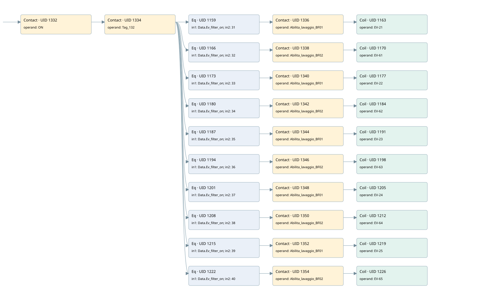

wash filter
filter · 검색 색인 순서 12 · 원본 내부 NID 추정 12
백업 PLF 원본의 2737190 바이트 위치에서 복원한 XML. 검색 문서 1893의 객체 키 161022003a11000000000000와 연결했다. 이름 해석 42/42개. 남은 RefId는 상수 또는 미해석 참조다.
연결 구조 다시 그리기
원본 Part/PCon/Wire를 이용한 연결도다. TIA 화면의 래더 배치 또는 실행 결과를 재현한 그림은 아니다. 핀 연결은 아래 표와 원본 XML을 기준으로 읽는다. 노드 위에 마우스를 두면 피연산자 이름을 볼 수 있다.

접점·코일·블록과 피연산자
| Part UID | Gate | Negated 핀 | 연결 피연산자 |
|---|---|---|---|
| 1332 | Contact | operand = ON | |
| 1334 | Contact | operand = Tag_132 | |
| 1159 | Eq | in1 = Data.Ev_filter_on; in2 = 31 | |
| 1336 | Contact | operand = Abilita_lavaggio_BF01 | |
| 1163 | Coil | operand = EV-21 | |
| 1166 | Eq | in1 = Data.Ev_filter_on; in2 = 32 | |
| 1338 | Contact | operand = Abilita_lavaggio_BF02 | |
| 1170 | Coil | operand = EV-61 | |
| 1173 | Eq | in1 = Data.Ev_filter_on; in2 = 33 | |
| 1340 | Contact | operand = Abilita_lavaggio_BF01 | |
| 1177 | Coil | operand = EV-22 | |
| 1180 | Eq | in1 = Data.Ev_filter_on; in2 = 34 | |
| 1342 | Contact | operand = Abilita_lavaggio_BF02 | |
| 1184 | Coil | operand = EV-62 | |
| 1187 | Eq | in1 = Data.Ev_filter_on; in2 = 35 | |
| 1344 | Contact | operand = Abilita_lavaggio_BF01 | |
| 1191 | Coil | operand = EV-23 | |
| 1194 | Eq | in1 = Data.Ev_filter_on; in2 = 36 | |
| 1346 | Contact | operand = Abilita_lavaggio_BF02 | |
| 1198 | Coil | operand = EV-63 | |
| 1201 | Eq | in1 = Data.Ev_filter_on; in2 = 37 | |
| 1348 | Contact | operand = Abilita_lavaggio_BF01 | |
| 1205 | Coil | operand = EV-24 | |
| 1208 | Eq | in1 = Data.Ev_filter_on; in2 = 38 | |
| 1350 | Contact | operand = Abilita_lavaggio_BF02 | |
| 1212 | Coil | operand = EV-64 | |
| 1215 | Eq | in1 = Data.Ev_filter_on; in2 = 39 | |
| 1352 | Contact | operand = Abilita_lavaggio_BF01 | |
| 1219 | Coil | operand = EV-25 | |
| 1222 | Eq | in1 = Data.Ev_filter_on; in2 = 40 | |
| 1354 | Contact | operand = Abilita_lavaggio_BF02 | |
| 1226 | Coil | operand = EV-65 |
접점 경로를 펼친 조건식
Contact·O/A·비교기의 원본 연결을 읽기 쉽게 펼친 보조 해석이다. POWER는 전원 레일 시작을 뜻한다. 호출 블록·에지·타이머의 내부 동작과 다중 쓰기 순서는 이 표로 실행 검증하지 않았다. 미해석 핀과 RefId는 원문 연결표에서 확인한다.
| UID | 동작 | 대상 | 원본 접점 경로 | 내용 |
|---|---|---|---|---|
| 1163 | Coil | EV-21 | (((ON AND Tag_132) AND [Data.Ev_filter_on = 31]) AND Abilita_lavaggio_BF01) | 조건에 따른 Coil 기록 |
| 1170 | Coil | EV-61 | (((ON AND Tag_132) AND [Data.Ev_filter_on = 32]) AND Abilita_lavaggio_BF02) | 조건에 따른 Coil 기록 |
| 1177 | Coil | EV-22 | (((ON AND Tag_132) AND [Data.Ev_filter_on = 33]) AND Abilita_lavaggio_BF01) | 조건에 따른 Coil 기록 |
| 1184 | Coil | EV-62 | (((ON AND Tag_132) AND [Data.Ev_filter_on = 34]) AND Abilita_lavaggio_BF02) | 조건에 따른 Coil 기록 |
| 1191 | Coil | EV-23 | (((ON AND Tag_132) AND [Data.Ev_filter_on = 35]) AND Abilita_lavaggio_BF01) | 조건에 따른 Coil 기록 |
| 1198 | Coil | EV-63 | (((ON AND Tag_132) AND [Data.Ev_filter_on = 36]) AND Abilita_lavaggio_BF02) | 조건에 따른 Coil 기록 |
| 1205 | Coil | EV-24 | (((ON AND Tag_132) AND [Data.Ev_filter_on = 37]) AND Abilita_lavaggio_BF01) | 조건에 따른 Coil 기록 |
| 1212 | Coil | EV-64 | (((ON AND Tag_132) AND [Data.Ev_filter_on = 38]) AND Abilita_lavaggio_BF02) | 조건에 따른 Coil 기록 |
| 1219 | Coil | EV-25 | (((ON AND Tag_132) AND [Data.Ev_filter_on = 39]) AND Abilita_lavaggio_BF01) | 조건에 따른 Coil 기록 |
| 1226 | Coil | EV-65 | (((ON AND Tag_132) AND [Data.Ev_filter_on = 40]) AND Abilita_lavaggio_BF02) | 조건에 따른 Coil 기록 |
원본 배선 연결
| Wire UID | 동일 Wire 연결 끝점 |
|---|---|
| 1356 | Powerrail {} ↔ Part 1332.in |
| 1269 | ORef 1227 (ON) ↔ Part 1332.operand |
| 1333 | Part 1332.out ↔ Part 1334.in |
| 1270 | ORef 1228 (Tag_132) ↔ Part 1334.operand |
| 1335 | Part 1334.out ↔ Part 1159.pre ↔ Part 1166.pre ↔ Part 1173.pre ↔ Part 1180.pre ↔ Part 1187.pre ↔ Part 1194.pre ↔ Part 1201.pre ↔ Part 1208.pre ↔ Part 1215.pre ↔ Part 1222.pre |
| 1271 | ORef 1229 (Data.Ev_filter_on) ↔ Part 1159.in1 |
| 1272 | ORef 1230 (31) ↔ Part 1159.in2 |
| 1273 | Part 1159.out ↔ Part 1336.in |
| 1274 | ORef 1231 (Abilita_lavaggio_BF01) ↔ Part 1336.operand |
| 1337 | Part 1336.out ↔ Part 1163.in |
| 1276 | ORef 1232 (EV-21) ↔ Part 1163.operand |
| 1277 | ORef 1233 (Data.Ev_filter_on) ↔ Part 1166.in1 |
| 1278 | ORef 1234 (32) ↔ Part 1166.in2 |
| 1279 | Part 1166.out ↔ Part 1338.in |
| 1280 | ORef 1235 (Abilita_lavaggio_BF02) ↔ Part 1338.operand |
| 1339 | Part 1338.out ↔ Part 1170.in |
| 1282 | ORef 1236 (EV-61) ↔ Part 1170.operand |
| 1283 | ORef 1237 (Data.Ev_filter_on) ↔ Part 1173.in1 |
| 1284 | ORef 1238 (33) ↔ Part 1173.in2 |
| 1285 | Part 1173.out ↔ Part 1340.in |
| 1286 | ORef 1239 (Abilita_lavaggio_BF01) ↔ Part 1340.operand |
| 1341 | Part 1340.out ↔ Part 1177.in |
| 1288 | ORef 1240 (EV-22) ↔ Part 1177.operand |
| 1289 | ORef 1241 (Data.Ev_filter_on) ↔ Part 1180.in1 |
| 1290 | ORef 1242 (34) ↔ Part 1180.in2 |
| 1291 | Part 1180.out ↔ Part 1342.in |
| 1292 | ORef 1243 (Abilita_lavaggio_BF02) ↔ Part 1342.operand |
| 1343 | Part 1342.out ↔ Part 1184.in |
| 1294 | ORef 1244 (EV-62) ↔ Part 1184.operand |
| 1295 | ORef 1245 (Data.Ev_filter_on) ↔ Part 1187.in1 |
| 1296 | ORef 1246 (35) ↔ Part 1187.in2 |
| 1297 | Part 1187.out ↔ Part 1344.in |
| 1298 | ORef 1247 (Abilita_lavaggio_BF01) ↔ Part 1344.operand |
| 1345 | Part 1344.out ↔ Part 1191.in |
| 1300 | ORef 1248 (EV-23) ↔ Part 1191.operand |
| 1301 | ORef 1249 (Data.Ev_filter_on) ↔ Part 1194.in1 |
| 1302 | ORef 1250 (36) ↔ Part 1194.in2 |
| 1303 | Part 1194.out ↔ Part 1346.in |
| 1304 | ORef 1251 (Abilita_lavaggio_BF02) ↔ Part 1346.operand |
| 1347 | Part 1346.out ↔ Part 1198.in |
| 1306 | ORef 1252 (EV-63) ↔ Part 1198.operand |
| 1307 | ORef 1253 (Data.Ev_filter_on) ↔ Part 1201.in1 |
| 1308 | ORef 1254 (37) ↔ Part 1201.in2 |
| 1309 | Part 1201.out ↔ Part 1348.in |
| 1310 | ORef 1255 (Abilita_lavaggio_BF01) ↔ Part 1348.operand |
| 1349 | Part 1348.out ↔ Part 1205.in |
| 1312 | ORef 1256 (EV-24) ↔ Part 1205.operand |
| 1313 | ORef 1257 (Data.Ev_filter_on) ↔ Part 1208.in1 |
| 1314 | ORef 1258 (38) ↔ Part 1208.in2 |
| 1315 | Part 1208.out ↔ Part 1350.in |
| 1316 | ORef 1259 (Abilita_lavaggio_BF02) ↔ Part 1350.operand |
| 1351 | Part 1350.out ↔ Part 1212.in |
| 1318 | ORef 1260 (EV-64) ↔ Part 1212.operand |
| 1319 | ORef 1261 (Data.Ev_filter_on) ↔ Part 1215.in1 |
| 1320 | ORef 1262 (39) ↔ Part 1215.in2 |
| 1321 | Part 1215.out ↔ Part 1352.in |
| 1322 | ORef 1263 (Abilita_lavaggio_BF01) ↔ Part 1352.operand |
| 1353 | Part 1352.out ↔ Part 1219.in |
| 1324 | ORef 1264 (EV-25) ↔ Part 1219.operand |
| 1325 | ORef 1265 (Data.Ev_filter_on) ↔ Part 1222.in1 |
| 1326 | ORef 1266 (40) ↔ Part 1222.in2 |
| 1327 | Part 1222.out ↔ Part 1354.in |
| 1328 | ORef 1267 (Abilita_lavaggio_BF02) ↔ Part 1354.operand |
| 1355 | Part 1354.out ↔ Part 1226.in |
| 1330 | ORef 1268 (EV-65) ↔ Part 1226.operand |
식별자 해석 근거 42개
| ORef UID | RefId | 이름 | IdentXmlPart 파일 | 해석 방법 |
|---|---|---|---|---|
| 1227 | 52 | ON | 0594-IdentXmlPart.xml | UID/RID + search-text + NID agreement |
| 1228 | 61 | Tag_132 | 0594-IdentXmlPart.xml | UID/RID + search-text + NID agreement |
| 1229 | 3 | Data.Ev_filter_on | 0596-IdentXmlPart.xml | UID/RID + search-text + NID agreement |
| 1230 | 132 | 31 | 0597-IdentXmlPart.xml | literal candidate: UID/RID/NID + nearby named declarations + search-text agreement |
| 1231 | 63 | Abilita_lavaggio_BF01 | 0598-IdentXmlPart.xml | UID/RID + search-text + NID agreement |
| 1232 | 133 | EV-21 | 0594-IdentXmlPart.xml | UID/RID + search-text + NID agreement |
| 1233 | 3 | Data.Ev_filter_on | 0596-IdentXmlPart.xml | UID/RID + search-text + NID agreement |
| 1234 | 134 | 32 | 0597-IdentXmlPart.xml | literal candidate: UID/RID/NID + nearby named declarations + search-text agreement |
| 1235 | 65 | Abilita_lavaggio_BF02 | 0598-IdentXmlPart.xml | UID/RID + search-text + NID agreement |
| 1236 | 135 | EV-61 | 0594-IdentXmlPart.xml | UID/RID + search-text + NID agreement |
| 1237 | 3 | Data.Ev_filter_on | 0596-IdentXmlPart.xml | UID/RID + search-text + NID agreement |
| 1238 | 136 | 33 | 0597-IdentXmlPart.xml | literal candidate: UID/RID/NID + nearby named declarations + search-text agreement |
| 1239 | 63 | Abilita_lavaggio_BF01 | 0598-IdentXmlPart.xml | UID/RID + search-text + NID agreement |
| 1240 | 137 | EV-22 | 0594-IdentXmlPart.xml | UID/RID + search-text + NID agreement |
| 1241 | 3 | Data.Ev_filter_on | 0596-IdentXmlPart.xml | UID/RID + search-text + NID agreement |
| 1242 | 138 | 34 | 0597-IdentXmlPart.xml | literal candidate: UID/RID/NID + nearby named declarations + search-text agreement |
| 1243 | 65 | Abilita_lavaggio_BF02 | 0598-IdentXmlPart.xml | UID/RID + search-text + NID agreement |
| 1244 | 139 | EV-62 | 0594-IdentXmlPart.xml | UID/RID + search-text + NID agreement |
| 1245 | 3 | Data.Ev_filter_on | 0596-IdentXmlPart.xml | UID/RID + search-text + NID agreement |
| 1246 | 140 | 35 | 0597-IdentXmlPart.xml | literal candidate: UID/RID/NID + nearby named declarations + search-text agreement |
| 1247 | 63 | Abilita_lavaggio_BF01 | 0598-IdentXmlPart.xml | UID/RID + search-text + NID agreement |
| 1248 | 141 | EV-23 | 0594-IdentXmlPart.xml | UID/RID + search-text + NID agreement |
| 1249 | 3 | Data.Ev_filter_on | 0596-IdentXmlPart.xml | UID/RID + search-text + NID agreement |
| 1250 | 142 | 36 | 0597-IdentXmlPart.xml | literal candidate: UID/RID/NID + nearby named declarations + search-text agreement |
| 1251 | 65 | Abilita_lavaggio_BF02 | 0598-IdentXmlPart.xml | UID/RID + search-text + NID agreement |
| 1252 | 143 | EV-63 | 0594-IdentXmlPart.xml | UID/RID + search-text + NID agreement |
| 1253 | 3 | Data.Ev_filter_on | 0596-IdentXmlPart.xml | UID/RID + search-text + NID agreement |
| 1254 | 144 | 37 | 0597-IdentXmlPart.xml | literal candidate: UID/RID/NID + nearby named declarations + search-text agreement |
| 1255 | 63 | Abilita_lavaggio_BF01 | 0598-IdentXmlPart.xml | UID/RID + search-text + NID agreement |
| 1256 | 145 | EV-24 | 0594-IdentXmlPart.xml | UID/RID + search-text + NID agreement |
| 1257 | 3 | Data.Ev_filter_on | 0596-IdentXmlPart.xml | UID/RID + search-text + NID agreement |
| 1258 | 146 | 38 | 0597-IdentXmlPart.xml | literal candidate: UID/RID/NID + nearby named declarations + search-text agreement |
| 1259 | 65 | Abilita_lavaggio_BF02 | 0598-IdentXmlPart.xml | UID/RID + search-text + NID agreement |
| 1260 | 147 | EV-64 | 0594-IdentXmlPart.xml | UID/RID + search-text + NID agreement |
| 1261 | 3 | Data.Ev_filter_on | 0596-IdentXmlPart.xml | UID/RID + search-text + NID agreement |
| 1262 | 148 | 39 | 0597-IdentXmlPart.xml | literal candidate: UID/RID/NID + nearby named declarations + search-text agreement |
| 1263 | 63 | Abilita_lavaggio_BF01 | 0598-IdentXmlPart.xml | UID/RID + search-text + NID agreement |
| 1264 | 149 | EV-25 | 0594-IdentXmlPart.xml | UID/RID + search-text + NID agreement |
| 1265 | 3 | Data.Ev_filter_on | 0596-IdentXmlPart.xml | UID/RID + search-text + NID agreement |
| 1266 | 150 | 40 | 0597-IdentXmlPart.xml | literal candidate: UID/RID/NID + nearby named declarations + search-text agreement |
| 1267 | 65 | Abilita_lavaggio_BF02 | 0598-IdentXmlPart.xml | UID/RID + search-text + NID agreement |
| 1268 | 151 | EV-65 | 0594-IdentXmlPart.xml | UID/RID + search-text + NID agreement |
검색 코드 보조 자료
참조 명칭을 찾기 위한 자료이며 실행 순서나 AND/OR 관계는 위 연결표로 확인한다.
"on" "tag_132" "data".ev_filter_on 31 #abilita_lavaggio_bf01 "ev-21" "data".ev_filter_on 32 #abilita_lavaggio_bf02 "ev-61" "data".ev_filter_on 33 #abilita_lavaggio_bf01 "ev-22" "data".ev_filter_on 34 #abilita_lavaggio_bf02 "ev-62" "data".ev_filter_on 35 #abilita_lavaggio_bf01 "ev-23" "data".ev_filter_on 36 #abilita_lavaggio_bf02 "ev-63" "data".ev_filter_on 37 #abilita_lavaggio_bf01 "ev-24" "data".ev_filter_on 38 #abilita_lavaggio_bf02 "ev-64" "data".ev_filter_on 39 #abilita_lavaggio_bf01 "ev-25" "data".ev_filter_on 40 #abilita_lavaggio_bf02 "ev-65"